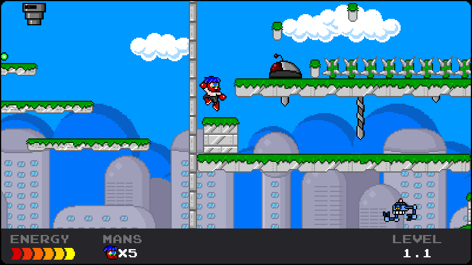

Stinkoman 20X6: Godot Remake
Thanks for checking out my remake of Stinkoman 20X6, in Godot! Keep in mind this game is still unfinished, so expect things to break often. You can play the game in your browser now, or download for the platform of your choice:
Credits & Thanks
Original Game Developed by Mike Chapman, Matt Chapman, Jonathan Howe, and Jez Swanson
Some asset work and lots of testing by KirbychuHRD
Sprite assets ripped courtesy of A.J. Nitro and Mr. C of The Spriters Resource
Controller button images by Xelu
OpenDyslexic font created by Abbie Gonzalez
Kylarzio font created by @AdigunPolack
Version History
- Nightly Build
- Version 0.9.1 (Latest): January 2, 2023
- Fixed camera issue on 4.2, adjusted some object placements.
- Version 0.9.0: December 24, 2022
- Added Level 9
- Added NES/Game Boy/GBC Palettes (Very early concepts currently)
- Minor collision and movement fixes
- Version 0.8.0: September 9, 2022
- Added Level 8
- Added support for alternate sprite palettes
- Version 0.7.0: June 7, 2022
- Added Level 7
- Some improvements to collision boxes
- Re-timed player animations for greater accuracy
- Added integer scale and aspect ratio settings
- Added touch controls toggle
- Improvements for controller input on menus
- Improved ladder controls
- Cleaned up death animations
- Version 0.6.0: January 6, 2022
- Added Level 6
- Added more context menu functionality to level editor
- Improved camera behavior in level editor
- Changed sprites for 2-Up
- Version 0.5.0: September 18, 2021
- Added Level 5
- Added proof-of-concept level editor
- Various balances/tweaks
- Added fall velocity cap
- Better ladder behavior
- Collision detection improvements
- Improved camera usability
- Several enemy bugfixes
- Version 0.4.1: June 7, 2021
- Fixed extra lives not reflecting on UI after collecting
- Fixed issues with cutscene viewer.
- Fixed Stlunko's conveyor belt not stopping on death.
- Version 0.4.0: June 6, 2021
- Added Levels 4.1-4.3
- Added options screen to pause menu
- Added Boss Rush mode & level select
- Added persistent time trial records
- Added bug reporting interface
- Level progress is now saved between sessions
- Added extra font options
- Various UI improvements
- Fixed issue with bottomless pit recovery placing the player in a death loop
- A whole host of other minor fixes/tweaks
- Version 0.3.0: April 30, 2021
- Added levels 2.1-3.3
- Reduced build size
- Added time attack mode with Stinkoman and 1-Up playable
- Replaced inaccurate sound effects
- Made Stinkoman's attack more accurate to the original
- Added a couple easter eggs
- Improved controller support
- Various bugflxes/accuracy improvements
- Version 0.2.1: March 7, 2021
- Fixed hidden portion of drills sometimes rendering
- Fixed tiling issues in 1.1
- Fixed level display being cut off
- Fixed post-boss battle behavior
- Improved background appearance
- Added the hidden power crunch in 1.1
- Version 0.2.0: March 6, 2021
- Added Level 1.2, 1.3
- Added title menu, intro screens, and cutscenes
- Added rebindable controls & audio settings
- Implemented death, lives, checkpoints, end-of-level flags
- Generally more accurate to the original
- Various Bugfixes
- Version 0.1.0: February 22, 2021
- Initial release
- Added level 1.1